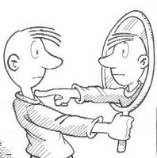

Dose extra!(){
Dicas
Por: Fellipe Augusto Alves Gurgel
Os instintos podem nos punir!
Cuidado!
As vezes, por ingenuidade ou consideração, contamos nossos planos, nossos objetivos, nossos métodos, etc, para nossos amigos ou "amigos". Isso é bom, super aconselhável no processo de aprendizado e de conquistas (afinal, quem não precisa de apoio e amizade nessa vida? Rs), mas o que ouvimos de volta nem sempre é o que esperamos ou precisamos.
Numa tentativa de ajudar (ou de atrapalhar, talvez), outras pessoas acabam nos dando conselhos errados. Tenho certeza que alguém já "quebrou a cara" seguindo o conselho de alguém.
Nesta dose extra de Simancol você receberá uns toques para prestar atenção nos conselhos que você recebe e filtrá-los. Também desmitificarei dois bem comuns e espero que os interprete de maneira sincera!
Conselhos errados:
- "Extravasar a raiva faz bem!"
Áh, muitos passarão por situações de estresse e raiva quando se tratar de um processo de aprendizado, desenvolvimento da inteligência e até atingir seus objetivos. Mas cuidado! Manter "os sapos" dentro de você ou negar a situação não é aconselhável. Entretanto, extravasar esses sentimentos podem não ser uma boa ideia também!
Estudos realizados nas Universidades de Iowa, EUA, e em Kent, Inglaterra, comprovaram que esse conselho é um grande mito, puro marketing. Os mesmos dizem que ao extravasar a raiva, socando algo, gritando, jogando algum esporte violento, contanto a um amigo, etc, acaba aumentando suas emoções negativas, estimulando pensamentos, sentimentos e ações agressivas e não acalmando os ânimos! Isso mesmo: desabafar para um amigo também não é a melhor das soluções, apenas uma falsa sensação de alívio momentâneo.
Esses mesmos estudos mostraram que as maneiras que se mostraram eficazes para acalmar os ânimos foram:- Desviar seus pensamentos da frustração e se distrair da forma que julgar melhor, assimilando assim, quem sabe, o lado positivo da situação;
- As artes também contribuem, como cantar e escutar músicas, assistir a um filme de comédia, ler um livro legal, etc;
- Esportes, atividades físicas podem ajudar, desde que não sejam agressivas.
- "O sucesso só vem àqueles que forem muito exigentes consigo mesmo!"
Acreditar demais em si e autodisciplina são alguns dos conselhos que levam uma pessoa a exigir demais dela mesma. Claro que friso a extrema importância do uso ponderado da autoconfiança e disciplina para nos mantermos motivados e focados a alcançarmos nossos objetivos.
Distúrbios ansiosos e depressivos estão constantemente presentes na rotina daqueles que se cobram demais. Enquanto que os mais compreensivos se sentem mais felizes, saudáveis e otimistas.
Esse problema é tão frequente que se tornou um novo campo de pesquisa da psicologia, chamado autocompaixão, comprovando que os exigentes acreditam que a cobrança os manterá na linha, com padrão de excelência elevado. Tudo isso influenciado pelos conselhos da autoajuda e, muitas vezes, pelos próprios familiares.
Vamos parar e pensar "tratamos nós mesmos da mesma forma que tratamos amigos ou familiares?". Essa pergunta é mais difícil de responder do que imaginamos e, com certeza, uma das mais importantes até agora! Essa reflexão faz parte do desenvolvimento da faceta da inteligência citada na Primeira dose de Simancol, a inteligência intrapessoal, lembra?? Pois é, estudos comprovam que as pessoas que acolhem e compreendem o problema alheio, tendem a ser mais rígidas com suas próprias falhas.
A autocompaixão estimula a nos cuidarmos melhor, foque sua energia em compreender suas falhas e absorver o que elas querem lhe ensinar, não perca tempo se criticando.
O grito alivia permanentemente?!

Quer se autocriticar? Não exagere!
Acredito que, mesmo a psicologia sendo uma área incrível, algumas pessoas se sentem no direito de ganhar dinheiro em cima da dificuldade alheia, dizendo o que os consumidores querem ler e vendendo milhares dos tais livros de auto-ajuda. Temos que ficar atentos a esses tipos de conselhos disfarçados de "bem-intencionados"!
Quando se trata dos nossos objetivos, não devemos basear nossas decisões nas opiniões, nos conselhos e afirmações dos outros. Fazendo isso, só enxergo você evoluindo (ou não) num caminho que não é o seu. Devemos estar flexíveis e dinâmicos ao escutar esses conselhos, mas lembre-se que "o caminho dos outros apenas o conduz até onde esses já foram". Não que eu esteja dizendo para você ignorar as outras pessoas, mas que aprenda a cometer os próprios erros e absorver a essência positiva da superação!
Bem, é isso, por enquanto... Espero que tenha gostado, como eu gostei de escrever, rs rs. E esteja pensando "Putz, estava mesmo precisando dessa dose de SIMANCOL!"
Referências:
}